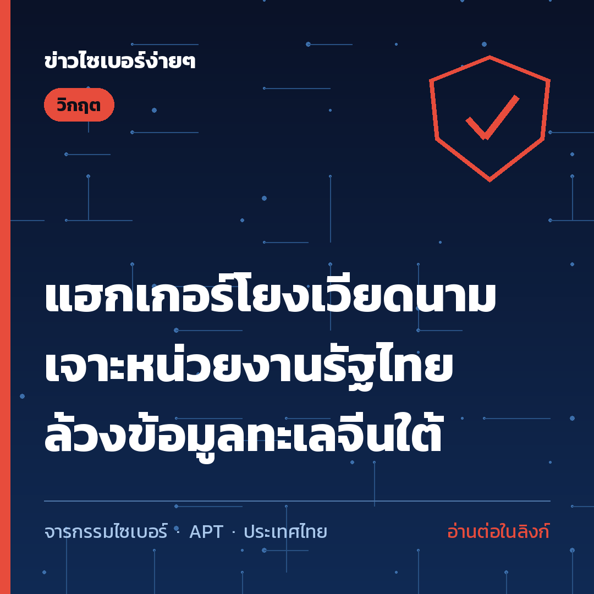

แฮกเกอร์ที่คาดโยงเวียดนาม เจาะหน่วยงานรัฐไทย-ฟิลิปปินส์ ล้วงข้อมูลทะเลจีนใต้
สรุปสั้นๆ
SOCRadar เปิดเผยกลุ่มแฮกเกอร์ WeaveLotus ที่คาดว่าเชื่อมโยงกับเวียดนาม เจาะระบบหน่วยงานทหาร รัฐสภา และหน่วยงานรัฐของไทยและฟิลิปปินส์รวม 5 ครั้ง ในช่วงสิงหาคมถึงกันยายน 2026 เพื่อหาข้อมูลข่าวกรองเรื่องทะเลจีนใต้ ช่องทางที่ใช้ส่วนใหญ่คือช่องโหว่เก่าที่ไม่ได้แพตช์และรหัสผ่านตั้งต้นที่ไม่เคยเปลี่ยน

📰 เกิดอะไรขึ้น
บริษัทข่าวกรองภัยไซเบอร์ SOCRadar รายงานแคมเปญชื่อ RedOps ของกลุ่มที่ตั้งชื่อว่า WeaveLotus ซึ่งเจาะระบบสำเร็จ 5 ครั้ง ได้แก่ หน่วยงานทหาร หน่วยงานด้านนิติบัญญัติ และหน่วยงานรัฐของไทย รวมถึงหน่วยงานรัฐฟิลิปปินส์ 2 แห่ง ส่วนอินโดนีเซียถูกสอดแนมแต่ยังไม่ถูกเจาะ
เป้าหมายคือเอกสารภายในเกี่ยวกับข้อตกลงด้านการทหารและความมั่นคงในทะเลจีนใต้ คนร้ายถึงขั้นเขียนสคริปต์ค้นข่าวผ่าน Bing อัตโนมัติ เพื่อเก็บข่าวเรื่องข้อตกลงระหว่างฟิลิปปินส์ จีน และสหรัฐฯ
วิธีเจาะส่วนใหญ่ไม่ได้ซับซ้อน คนร้ายใช้ช่องโหว่ร้ายแรงใน GeoServer (CVE-2024-36401) และ osTicket (CVE-2021-42235) ใช้รหัสผ่านตั้งต้น jasperadmin:jasperadmin ของ JasperReports ที่ไม่มีใครเปลี่ยน และใช้เว็บ Laravel ที่เปิดโหมด debug ทิ้งไว้ จากนั้นสร้างอุโมงค์ SSH ย้อนกลับเพื่อเข้าออกเครือข่ายได้ตลอด และขยายไปยังระบบอื่นต่อ
ในหน่วยงานรัฐของไทยแห่งหนึ่ง คนร้ายขโมยฐานข้อมูลรหัสผ่านจาก Keycloak แล้วถอดรหัสโดยใช้รายการคำที่สร้างจากปี พ.ศ. ก่อนนำบัญชีที่ใช้ได้ไปดึงข้อมูลกว่า 349,782 รายการ ส่วนอีกหน่วยงาน คนร้ายเดารหัสผ่านโดยจับคู่ชื่อพนักงานจริงกับเลขบัตรประชาชน และขโมยไฟล์ ZIP ไปกว่า 5,000 ไฟล์
🔎 ข้อมูลเพิ่มเติมจากแหล่งอื่น
รายงานฉบับเต็มของ SOCRadar ระบุว่า ข้อมูลที่ถูกขโมยจากระบบจัดการเอกสารของหน่วยงานนิติบัญญัติไทยมีขนาดราว 19 GB และจากระบบ Directus ของหน่วยงานทหารไทยอีกกว่า 31,000 ไฟล์ คนร้ายยังใช้ OCR อ่านข้อความภาษาไทยและอังกฤษจากรูปภาพ และพยายามเข้าถึงกล้องวงจรปิดที่ส่งภาพผ่าน Wowza แต่ไม่สำเร็จ
เรื่องผู้อยู่เบื้องหลัง SOCRadar ให้ความมั่นใจระดับ "ปานกลาง" ว่าเป็นกลุ่มที่รัฐเวียดนามหนุนหลัง โดยดูจากคอมเมนต์ภาษาเวียดนามในโค้ด เวลาทำงานตรงกับเขตเวลา UTC+7 และเป้าหมายที่เลือก แต่ก็ยอมรับว่าหลักฐานยังไม่ยืนยันได้ชัดเจน ส่วนความเชื่อมโยงกับกลุ่ม OceanLotus (APT32) มีความมั่นใจต่ำ
ช่องโหว่ GeoServer CVE-2024-36401 มีคะแนนความร้ายแรง 9.8 จาก 10 ทำให้คนร้ายรันคำสั่งบนเซิร์ฟเวอร์ได้โดยไม่ต้องล็อกอิน และ CISA ของสหรัฐฯ เคยเตือนว่ามีการโจมตีจริงตั้งแต่ปี 2024 พร้อมรายงานว่าช่องโหว่นี้เคยถูกใช้เจาะหน่วยงานรัฐบาลกลางสหรัฐฯ มาแล้ว
👥 ใครได้รับผลกระทบ
- หน่วยงานทหาร รัฐสภา และหน่วยงานรัฐในไทย ฟิลิปปินส์ และอินโดนีเซีย
- องค์กรที่ยังใช้ GeoServer, osTicket, JasperReports, Keycloak เวอร์ชันเก่า หรือเว็บ Laravel ที่เปิด debug ไว้
- พนักงานและประชาชนที่ข้อมูลส่วนตัวอยู่ในระบบที่ถูกเจาะ ซึ่งอาจถูกนำไปใช้หลอกลวงต่อ
✅ ควรทำอย่างไร
- องค์กร: อัปเดต GeoServer และ osTicket เป็นเวอร์ชันที่แก้ช่องโหว่แล้ว และอัปเกรด Keycloak รุ่นเก่า
- เปลี่ยนรหัสผ่านตั้งต้นของทุกระบบทันที โดยเฉพาะ JasperReports และปิดโหมด debug ของเว็บ Laravel บนเซิร์ฟเวอร์จริง
- ห้ามใช้เลขบัตรประชาชน ชื่อ หรือปี พ.ศ. เป็นรหัสผ่าน เปิดใช้การยืนยันตัวตนหลายชั้น (MFA) และเฝ้าระวังการเดารหัสผ่านจำนวนมาก
- ทีมไอที: เฝ้าระวังการเชื่อมต่อ SSH ขาออกผ่านพอร์ต 443 การใช้ SOCKS proxy และการส่งข้อมูลปริมาณมากออกนอกเครือข่าย และบล็อก IP 172.235.245[.]49 ตามรายงาน
- หน่วยงานไทยที่สงสัยว่าถูกเจาะ ควรแจ้ง ThaiCERT หรือ สกมช. (NCSA) เพื่อขอความช่วยเหลือ
- ประชาชน: ระวังอีเมลหรือข้อความที่อ้างเป็นหน่วยงานรัฐและขอข้อมูลส่วนตัวหรือรหัสผ่าน
📖 คำศัพท์น่ารู้
- APT
- กลุ่มแฮกเกอร์ฝีมือสูงที่มักมีรัฐหนุนหลัง เจาะระบบแบบเงียบๆ และอยู่ในเครือข่ายเป็นเวลานานเพื่อขโมยข้อมูล
- Reverse SSH tunnel
- ช่องทางลับที่เครื่องในองค์กรเชื่อมออกไปหาคนร้าย ทำให้คนร้ายเข้ามาในเครือข่ายได้โดยผ่านไฟร์วอลล์
- Password spraying
- การเดารหัสผ่านแบบใช้รหัสที่น่าจะถูกไม่กี่ตัว ลองกับบัญชีจำนวนมาก เพื่อไม่ให้บัญชีถูกล็อก
- Default credentials
- ชื่อผู้ใช้และรหัสผ่านที่ติดมากับโปรแกรมตั้งแต่ติดตั้ง ถ้าไม่เปลี่ยน ใครก็เดาได้
แหล่งอ้างอิง
- Suspected Vietnam-Linked Hackers Target Southeast Asia in South China Sea Espionage Campaign The Hacker News (ข่าวต้นฉบับ)
- RedOps: WeaveLotus Targets Southeast Asian Governments for South China Sea Intelligence (SOCRadar via Malware News) malware.news
- NVD - CVE-2024-36401 nvd.nist.gov
- CISA Cybersecurity Advisory AA25-266A cisa.gov
บทความนี้เรียบเรียงเป็นภาษาไทยโดยใช้ AI ช่วยจากแหล่งข่าวด้านบน โปรดตรวจสอบรายละเอียดจากแหล่งอ้างอิงก่อนนำไปใช้